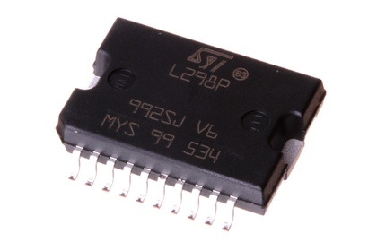
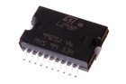
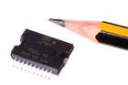
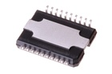

SMD (Power SO-20) Dual H-Bridge (L298) 4 A - ICS298

Summary
Name:
SMD (Power SO-20) Dual H-Bridge (L298) 4 A
ID:
ICIC-PS20-X-KL298-A4
Hex ID:
ICS298
WebPage:
https://github.com/oomlout/oomlout-OOMP/wiki/ICIC-PS20-X-KL298-A4
Short URL:
http://oom.lt/ICS298
Revision History:
https://github.com/oomlout/oomlout-OOMP/blob/master/parts/ICIC-PS20-X-KL298-A4/
Type
Size
Color
Description
Index
ICIC
PS20
SMD (Power SO-20)
X
KL298
Dual H-Bridge (L298)
A4
4 A
Images
  
About
This part is awaiting a description.
Specifications
Info
Value
Size
SMD (Power SO-20)
Description
Dual H-Bridge (L298)
Index
4 A
Extra Details
Spotted a mistake, want to add more? Let us know
oomp@oomlout.com
All images and resources are licensed [CC BY-SA] unless otherwise stated (ie. the datasheets)